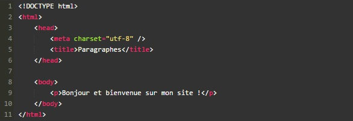
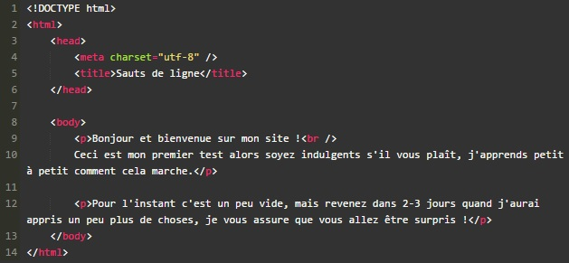
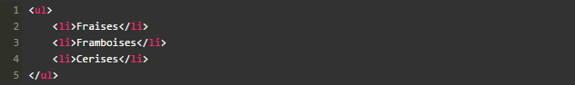
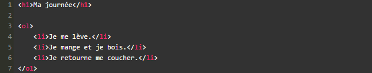

Chapitre 3 - Organiser son texte
Section 1 - Les paragraphes
La plupart du temps, lorsqu'on écrit du texte dans une page web, on le fait à l'intérieur de paragraphes. Le langage HTML propose justement la balise ‹p›
pour délimiter les paragraphes.
‹p› Bonjour et vive la pastaga‹/p›
Comme je vous l'ai dit au chapitre précédent, on écrit le contenu du site web entre les balises ‹body› ‹/body› .Il nous suffit donc de mettre notre paragraphe entre ces deux balises et nous aurons
enfin notre première vraie page web avec du texte !

Sauter une ligne
En fait, si vous voulez écrire un deuxième paragraphe, il vous suffit d'utiliser une deuxième balise ‹p› .
Oui, mais si je veux juste aller à la ligne dans un paragraphe et non pas sauter une ligne ?
Eh bien devinez quoi : il existe une balise « Aller à la ligne » !
C'est une balise orpheline qui sert juste à indiquer qu'on doit aller à la ligne : ‹br/›
Vous devez obligatoirement la mettre à l'intérieur d'un paragraphe.

Section 2 - Les titres
En HTML, on est verni, on a le droit d'utiliser six niveaux de titres différents.
‹H1› ‹/H1› : signifie « titre très important ». En général, on s'en sert pour afficher le titre de la page au début de celle-ci.
‹H2› ‹/H2› : signifie « titre important ».
‹H3› ‹/H3› : pareil, c'est un titre un peu moins important (on peut dire un « sous-titre » si vous voulez).
‹H4› ‹/H4› : titre encore moins important.
‹H5› ‹/H5› : titre pas important.
‹H6› ‹/H6› : titre vraiment, mais alors là vraiment pas important du tout.
Section 3 - La mise en valeur
Sous-section 1 - Mettre un peu en valeur
Pour mettre un peu en valeur votre texte, vous devez utiliser la balise ‹em› ‹/em› .
‹em› a pour conséquence de mettre le texte en italique.
Sous-section 2 - Mettre bien en valeur
Pour mettre un texte bien en valeur, on utilise la balise ‹strong› qui signifie « fort », ou « important ». En utilisant ‹strong› le texte s'affichera en gras.
Sous-section 3 - Marquer le texte
La balise ‹mark› permet de
faire ressortir visuellement une portion de texte.
Par défaut, ‹mark› a pour effet de surligner le texte.
Sous-section 4 - Souffler n'est pas HTML
Il ne faut pas confondre les balises HTML de mise en valeur et la gestion de l'apparence avec CSS. Les balises de mise en valeur signifient : A toi Navigateur,
je veux indiquer que cette portion de texte est importante. L'intérêt des balises de mise en valeur est qu'elles participent à l'amélioration du référencement d'un site.
Section 4 - Les listes
Il existe 2 types de listes en HTML :
-
Les listes non ordonnées
-
Les listes ordonnées
Sous-section 1 - Les listes non ordonnées
Une liste ordonnée est un système qui nous permet de créer une liste d'éléments sans notion d'ordre (il n'y a pas de « premier » ni de « dernier »). Créer une liste non ordonnée est très simple. Il suffit d'utiliser
la balise ‹ul› que l'on referme un peu plus loin avec ‹/ul›
Et maintenant, voilà ce qu'on va faire : on va écrire chacun des éléments de la liste entre deux balises ‹li› et ‹/li› .

Sous-section 2 - Les listes ordonnées
Une liste ordonnée fonctionne de la même façon, seule une balise change : il faut remplacer ‹ul›
et ‹/ul› par ‹ol› et ‹/ol› . On obtient alors une liste semblable :

Ma journée
-
Je me lève.
-
Je mange et je bois.
-
Je retourne me coucher.